Крем-шампунь для бороды Trius "Cибирский лес"
700 руб.
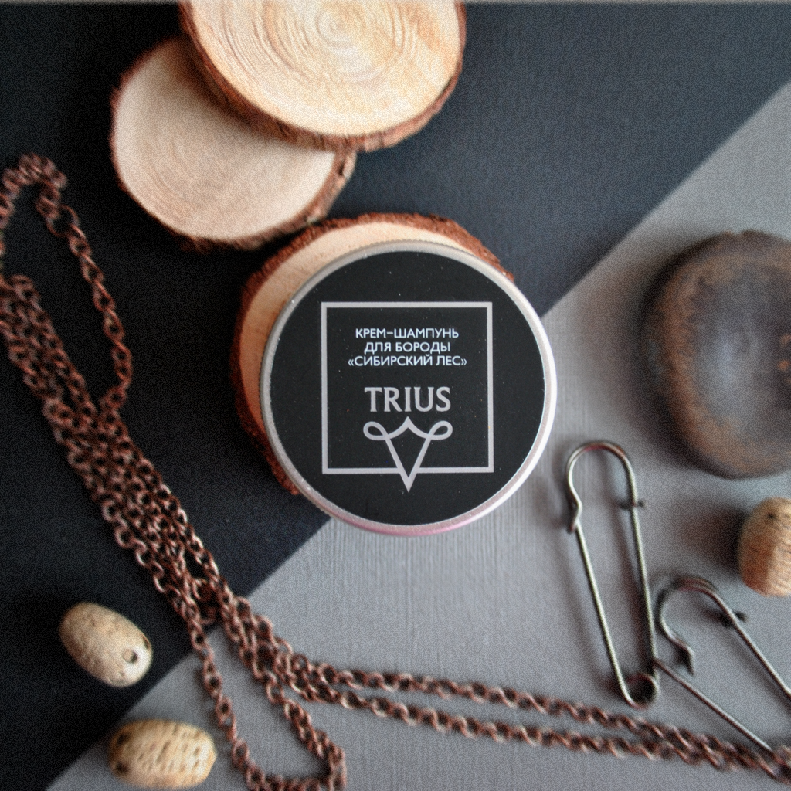
Крем-шампунь для бороды от компании Trius "Сибирский лес", для мытья бороды утром и вечером. В составе крем-шампуня содержится миндальное масло, которое не дает мыльной основе высушивать кожу. После использования кожа будет увлажненной, а борода чистой и податливой. Обильно пенится, легко смывается. Одной баночки хватает на 2-4 месяца ежедневного использования.
Воск для усов Trius "Cибирский лес"
500 руб.
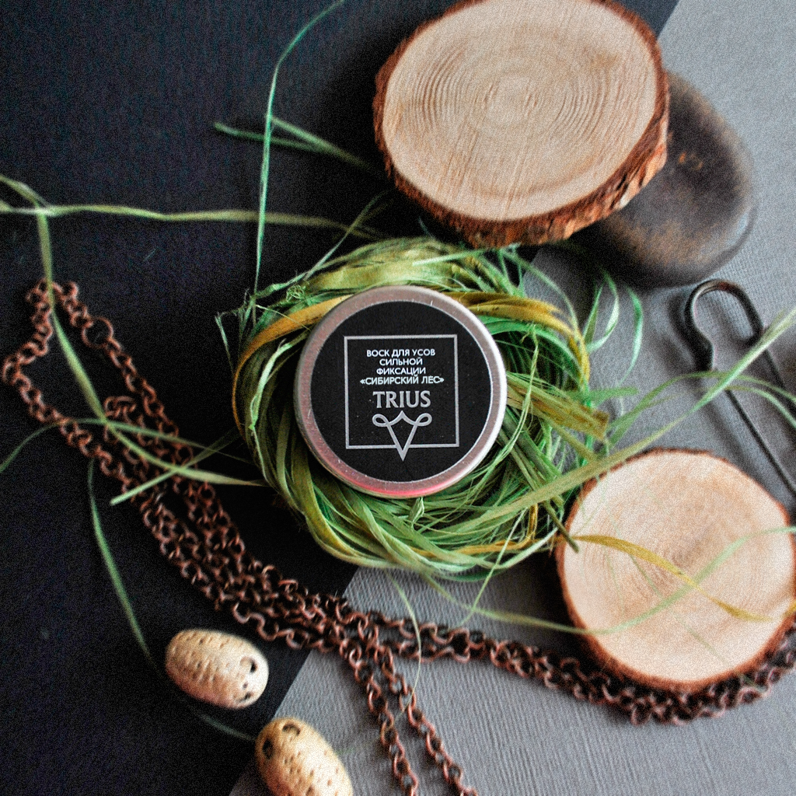
Воск для усов Trius "Сибирский лес" сверхсильной фиксации поможет сделать усы чуть аккуратнее или зафиксировать их так, чтобы можно было прыгать с парашютом. В состав воска входят такие проверенные временем компоненты, как миндальное масло, ланолин и пчелиный воск, которые будут не только фиксировать, но и питать ваши усы и заботиться об их внешнем виде.
Воск для усов Trius "Кокос"
500 руб.
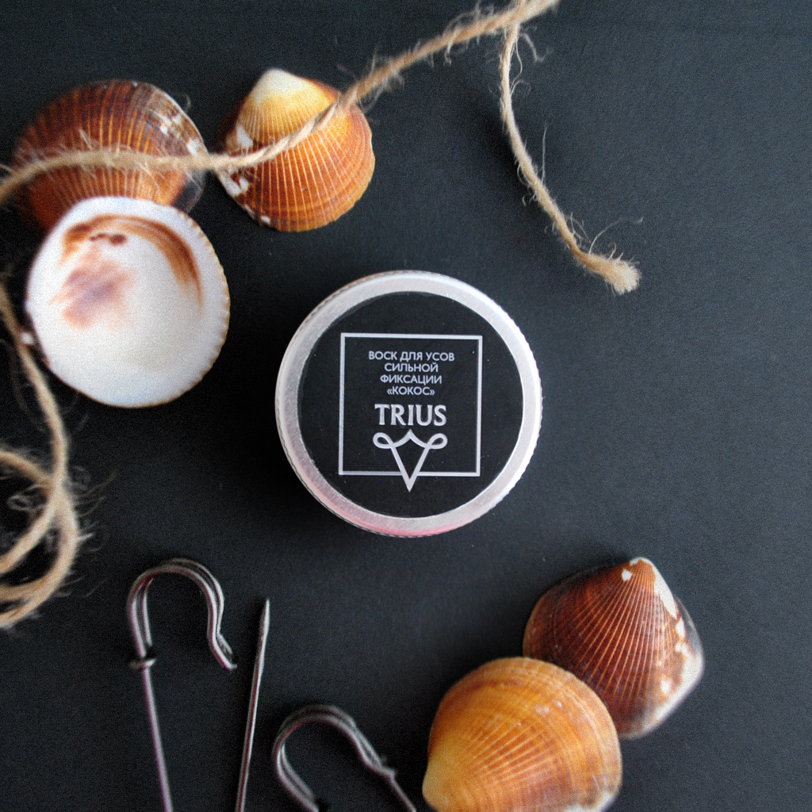
Воск для усов Trius сильной фиксации "Кокос" для ежедневного применения. Крепко зафиксирует ваши усы, поможет придать любую желаемую форму приучит их к правильному росту. В состав воска входят такие проверенные временем компоненты, как миндальное масло, ланолин и пчелиный воск, которые будут не только фиксировать, но и питать ваши усы и заботиться об их внешнем виде.
Воск для усов Borodist "Air" Premium
500 руб.
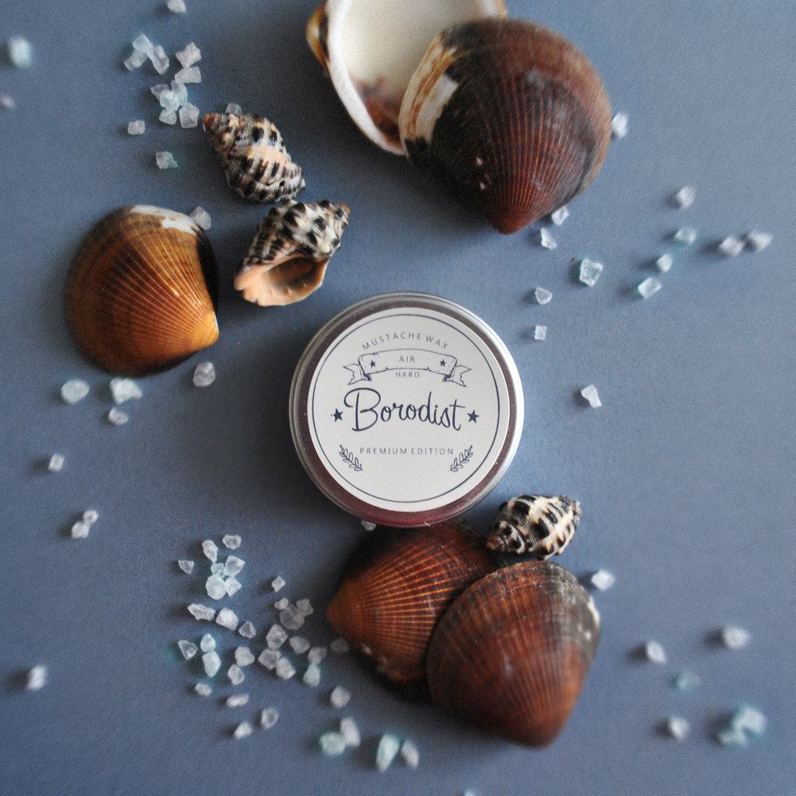
Компоненты, входящие в состав воска Borodist "Air" Premium, имеют уникальные свойства. Белый пчелиный воск повышает вязкость средства, делает его более пластичным. Канделильский — образует незаметную водоотталкивающую пленку. Карнаубский — защищает структуру волос от температурных воздействий. Волосы и кожа будут надежно защищены от неблагоприятных внешних воздействий.
Воск для бороды и усов Master "Кедр"
500 руб.
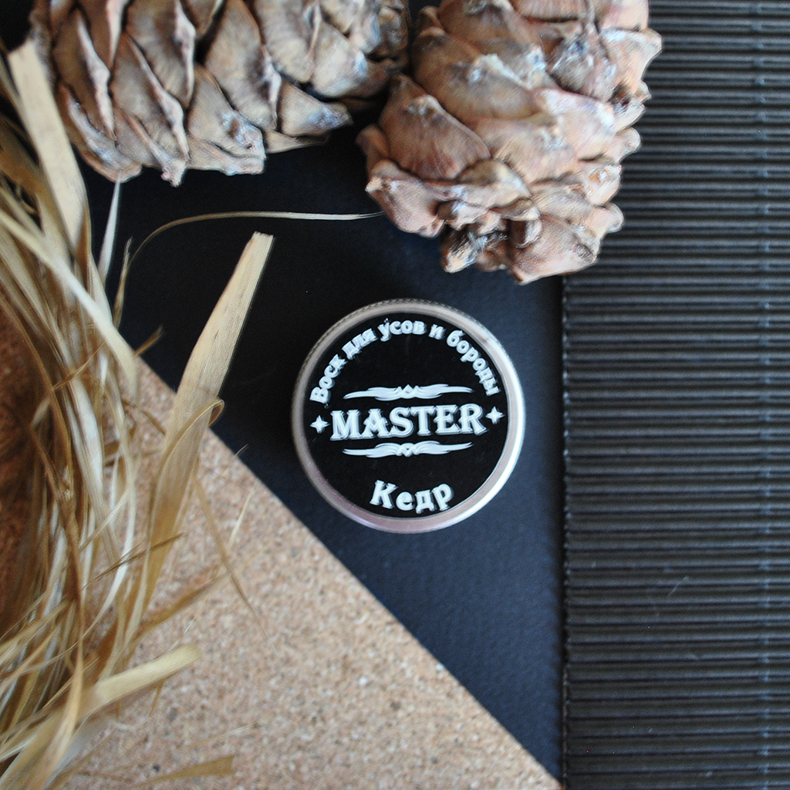
Помогает усам и бороде держать форму в течение дня, улучшает их состояние, благодаря натуральным компонентам в составе средства. Кокосовое масло обеспечивает волосы необходимыми питательными веществами для роста. Касторовое масло способствует росту и укреплению волос, делает их гуще и сильнее. Масло ши увлажняет, питает, смягчает жесткие волосы. Эфирное масло кедра восстанавливает поврежденные волосы, укрепляет их.
Воск для усов Master "Мед и ваниль"
500 руб.
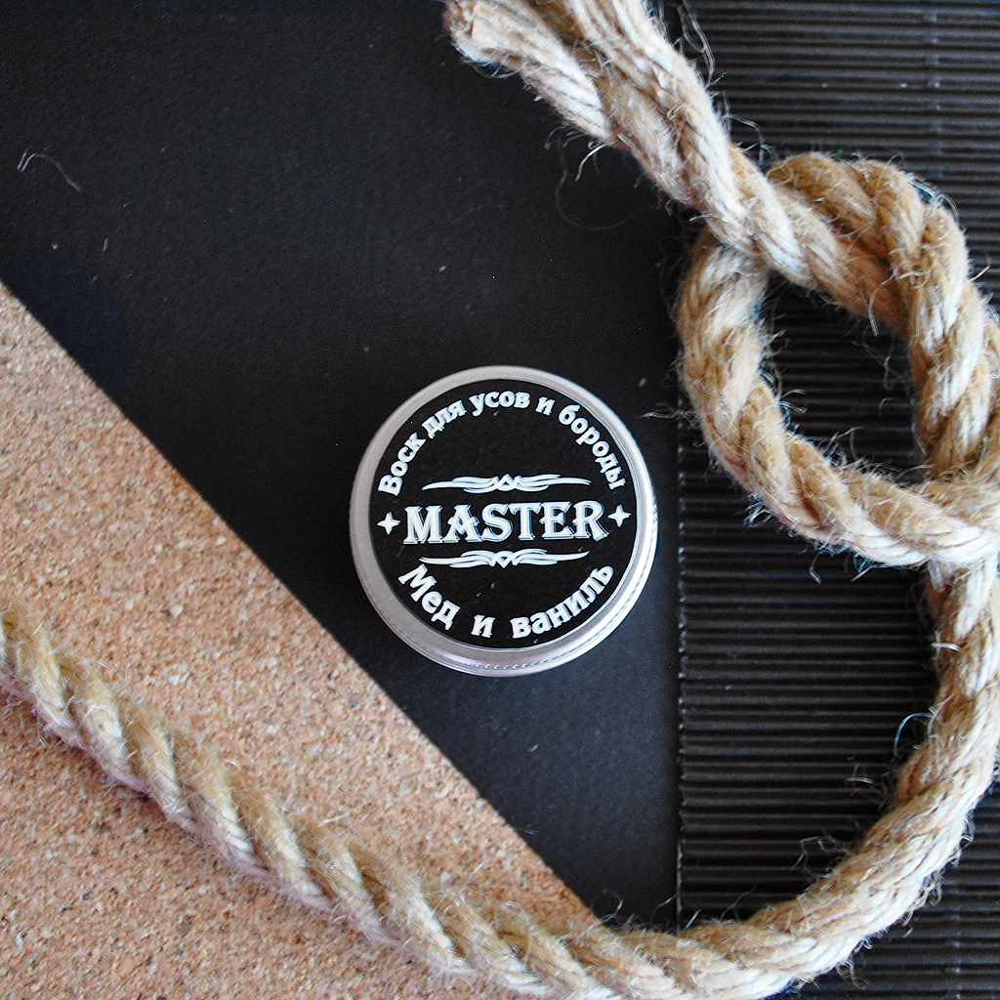
Помогает усам и бороде держать форму, благодаря натуральным компонентам улучшает их состояние. Кокосовое масло обеспечивает волосы необходимыми питательными веществами для роста. Репейное масло укрепляет волосы, способствует их ускоренному росту, повышает объем. Масло ши увлажняет, питает, смягчает жесткие волосы. Экстракт ванили восстанавливает поврежденные волосы, обладает кондиционирующими свойствами.
Бальзам для бороды Borodist "Warrior"
800 руб.

Бальзам для бороды Borodist "Warrior" - выбор суровых мужчин. Состав подобран с маниакальной аккуратностью и включает в себя уникальную смесь ингредиентов, которая впитывается в волос бороды, фиксирует её, делает её послушной и блестящей. Помимо стандартного набора масел в состав входит экстракт пивных дрожжей, а так же экстракт почек берёзы, оказывающий стимулирующий эффект.
Бальзам для бороды Borodist "Sapphire"
800 руб.
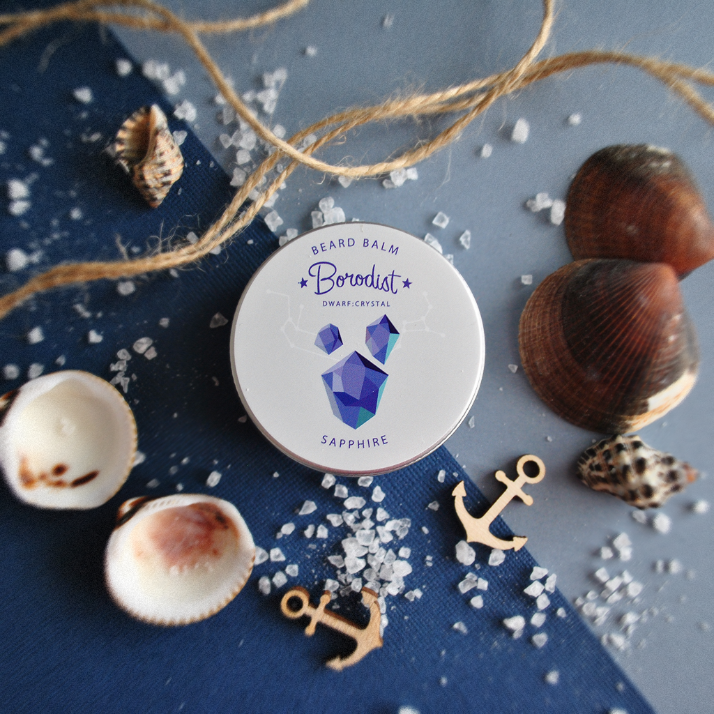
Средство 2 в 1: ухаживает за кожей и волосами, фиксирует бороду. Экстракты розмарина, облепихи, крапивы положительно влияют на кожу и волос бороды, а так же в бальзам добавлен лихо закрученный фьюжн в виде экстрактов малины и чабреца! Комбинация ши, жожоба и других масел эффективно борется с раздражением кожи, смягчает и увлажняет волосы бороды, делая их послушными и податливыми, придает здоровое сияние.
Бальзам для бороды Borodist "Paladin"
800 руб.
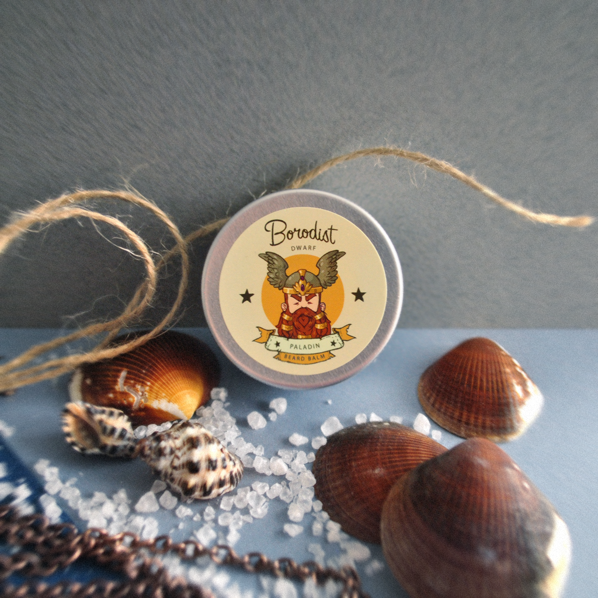
Бальзам для бороды Borodist "Paladin" придаст вашей бороде особенный блеск, густоту и форму. Он обладает ярким, изысканным и выразительным ароматом миндальных сливок. Ингредиенты для ухода за бородой подобраны самым тщательным образом. Все масла натуральные, природного происхождения. Экстракт кофе и грейпфрута являются хорошим подспорьем для здоровья кожи лица.
Бальзам для бороды Borodist "Ruby"
800 руб.
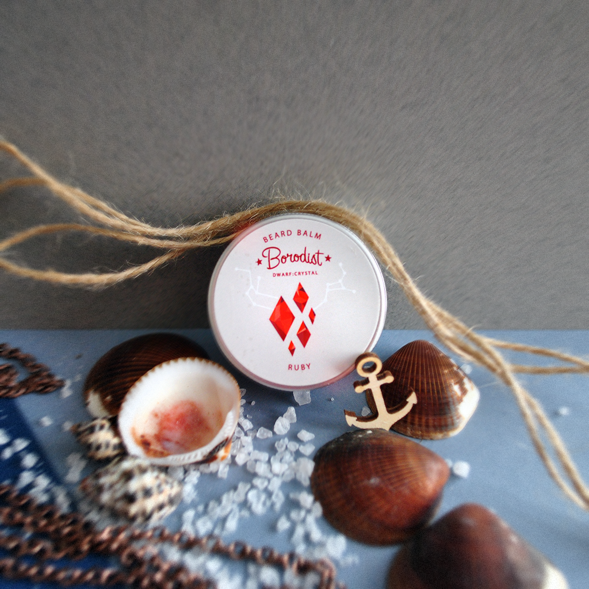
Сочетание таких экстрактов, как ламинария, фукус, крапива, дают противовоспалительный, заживляющий эффект. В чудодейственном составе также присутствует экстракт аира, который заживляет кожу, защищает ее от негативного воздействия грибка. Такая комбинация всех масел и экстрактов оказывает неповторимый эффект на бороду, делая ее здоровой, пышной, а также яркой и сияющей — будто горный рубин!
Масло для бороды Truis "Сандал" Premium
1100 руб.
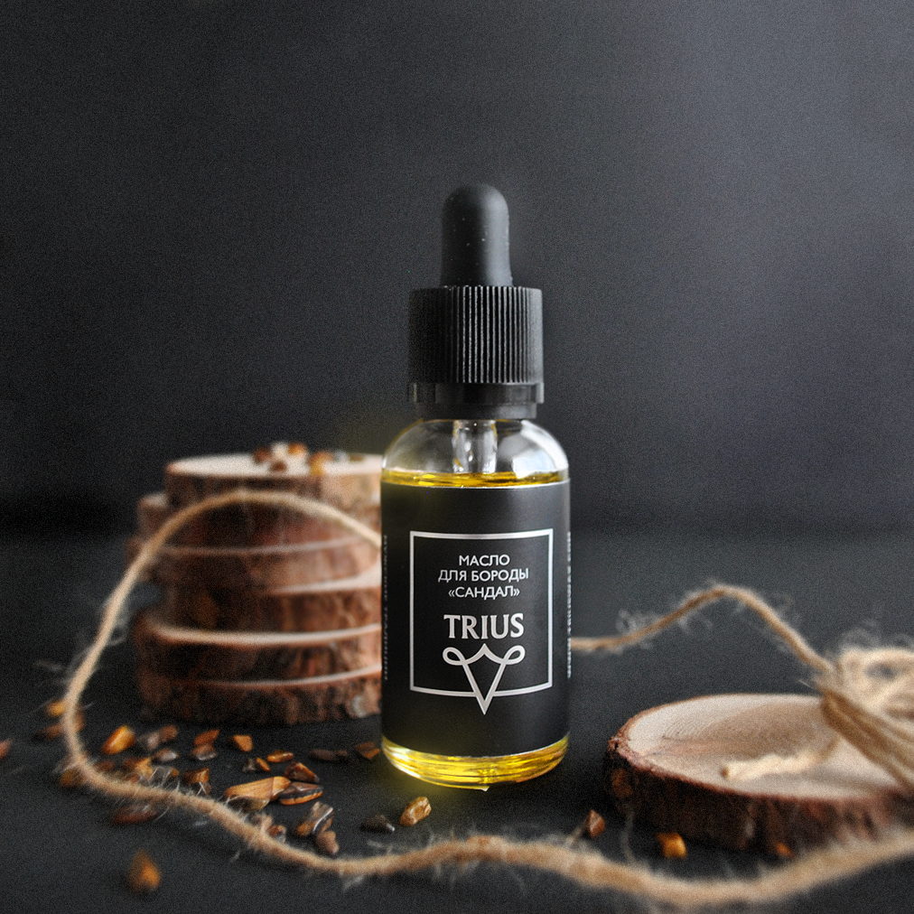
Масло для бороды Truis "Сандал" Premium содержит в себе лучшие природные компоненты и экстракты, которые обеспечивают максимально полный уход за бородой и усами. Состав: масло миндальных косточек, масло зародышей пшеницы, масло виноградных косточек, масло жожоба, масло арганы, ляняное масло, масло макадамског ореха, парфюмерная композиция, витамин E, Масло смягчает и увлажняет бороду.
Масло для бороды Borodist "Emerald"
500 руб.
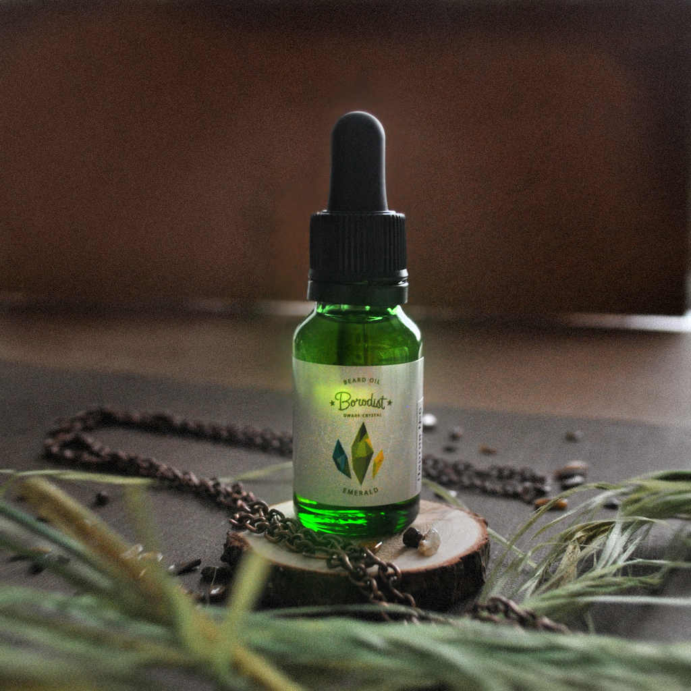
Масло Borodist "Emerald" - чудесное магическое масло для комплексного ухода за бородой, которое содержится в небольшой скляночке 15 мл. Среди компонентов: экстракты чабреца, лопуха и хвоща - в сочетании они крайне благотворно воздействуют на бороду, прекрасно её увлажняют, приводят в порядок в том числе и проблемную кожу лица, обладают противовоспалительными свойствами.
Масло для бороды Borodist "Classic"
400 руб.
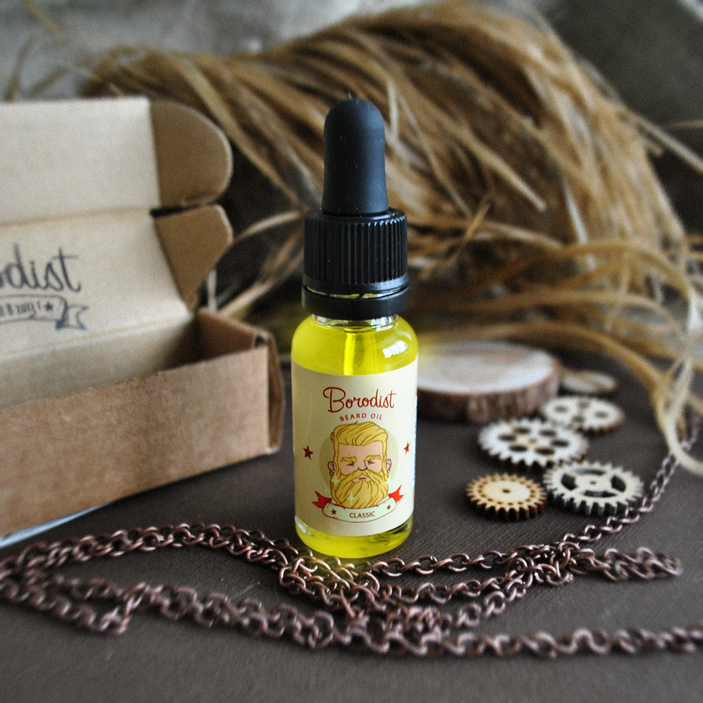
Классическое масло для бороды. Основной компонент — масло жожоба, которое издавна именуют «жидким золотом» за его насыщенный цвет и высокую ценность. Жожоба глубоко увлажняет кожу и волосы, защищает от негативного воздействия окружающей среды. Среди дополнительных компонентов — масло виноградных косточек, сладкого миндаля, зародышей пшеницы и знаменитое касторовое. Вместе с витамином E они питают кожу.
Масло Borodist "Diamond"
500 руб.
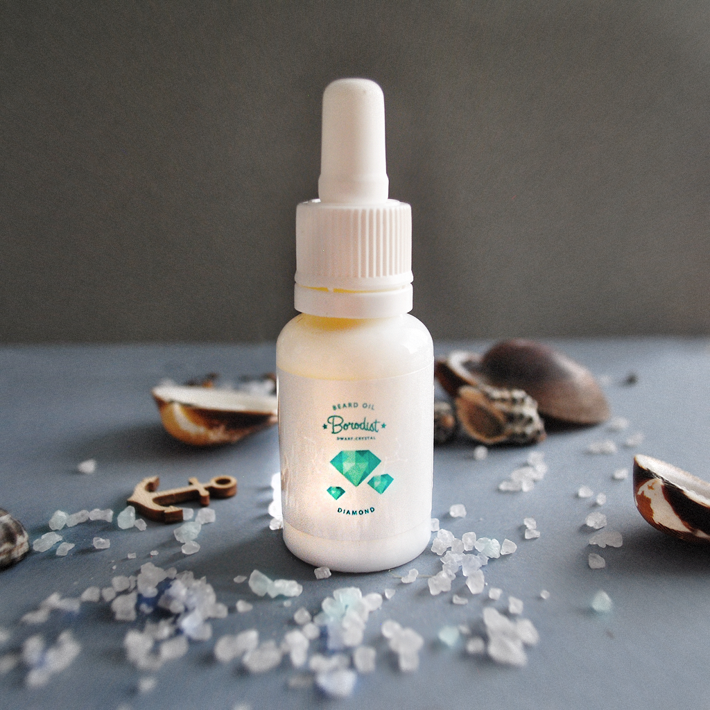
В состав масла входят только натуральные компоненты! Сочетание нескольких видов масел благоприятно влияет на волос и кожу лица, умягчая и тонизируя их. При этом, в волшебную микстуру добавлен богатый витаминный комплекс. Довершает рецепт комбинация экстрактов различных трав и цветов. Розмарин, зверобой и ромашка обладают противовоспалительным и заживляющим эффектом.
Масло для роста бороды Master
990 руб.
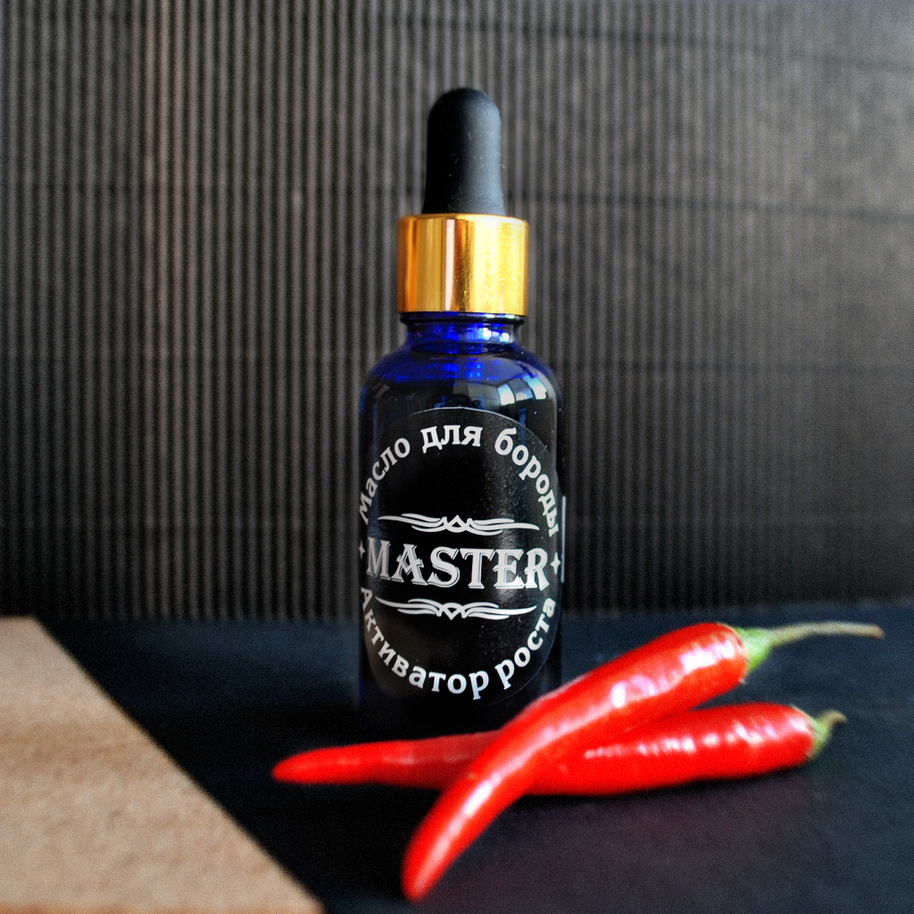
Эффективно, если не растет борода. Стимулирует работу волосяных фолликул, активизирует спящие корни волос. Устраняет сухость, зуд и раздражение кожи при росте бороды. Обеспечивает быстрый равномерный рост бороды и увеличивает ее густоту и пышность. Состав: репейное масло, касторовое масло, льняное масло, экстракт хмеля, экстракт крапивы, экстракт красного перца, эфирные масла кипариса, розмарина, пихты
Масло для бороды увлажняющее Master
800 руб.
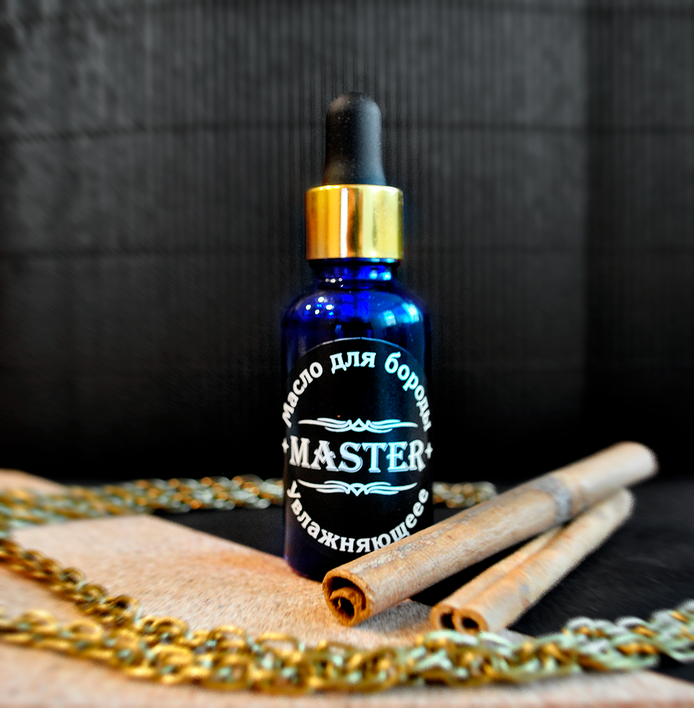
Восстанавливает здоровую структуру даже очень сухих, ослабленных и тусклых волос бороды, Глубоко увлажняет, питает бороду и кожу лица, Снимает зуд, устраняет сухость, покраснения и раздражение кожи лица, редотвращает развитие воспалительных процессов. Состав: касторовое, репейное и льняное масло, экстракт шалфея, экстракт облепихи, эфирное масло апельсина, эфирное масло корицы.
Масло для бороды Master "Особое с мускусом"
700 руб.
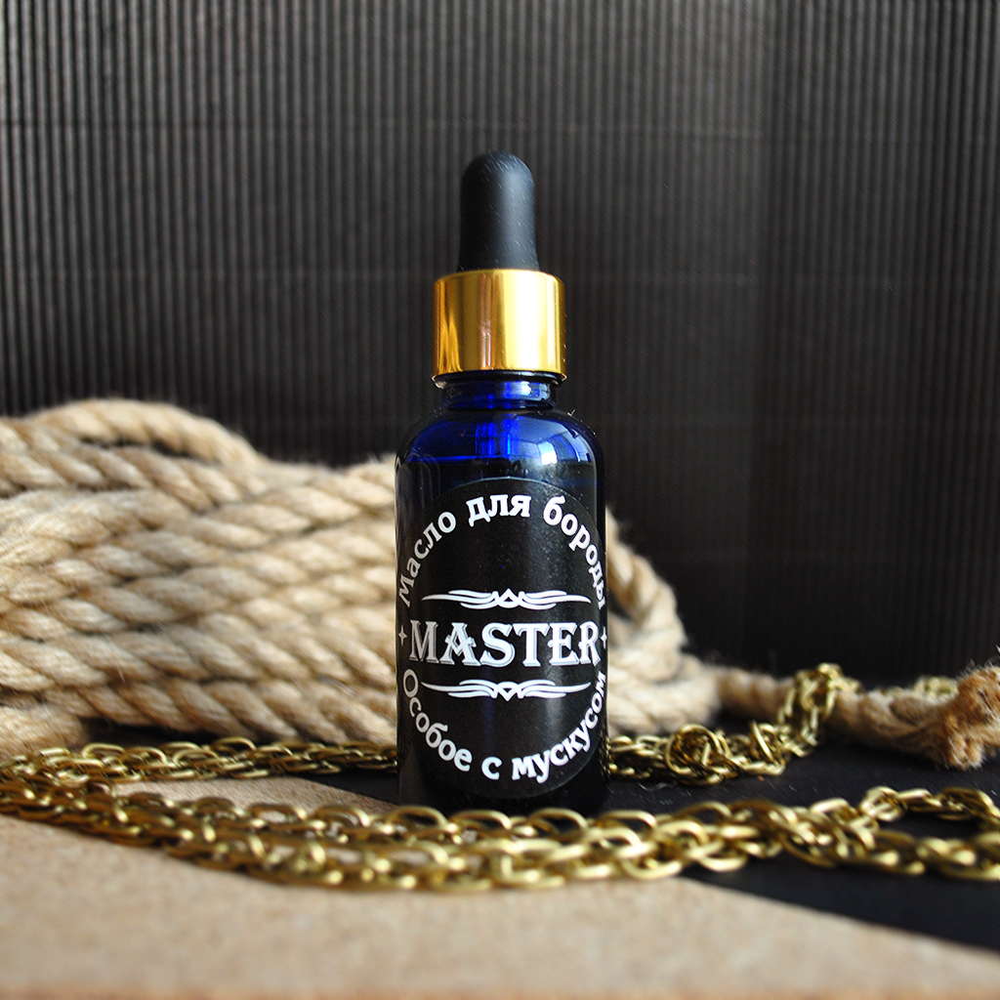
Содержит в составе афродизиак - мускус. Ухаживает за бородой, делает волос послушным, мягким и блестящим. Укрепляет волосы, способствует их ускоренному росту, повышает густоту и объем. Питает слабые и безжизненные волосы, повышает их эластичность. Препятствует ломкости и чрезмерной сухости волос. Борется с болезнетворными бактериями и микробами, устраняет покраснения и раздражения, улучшает цвет лица.
Масло для бороды Master "Смягчающее"
800 руб.
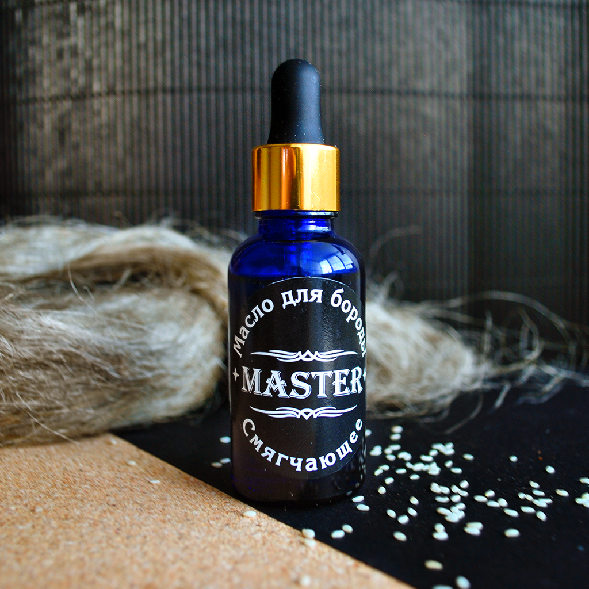
Улучшает состояние жесткой растительности на лице, делая ее мягкой, блестящей и шелковистой. Восстанавливает и укрепляет поврежденные волосы, обеспечивая их необходимыми аминокислотами. Избавляет от ломкости и чрезмерной сухости волос. Состав: миндальные и касторовые масла, кунжутное масло, оливковое и кукурузные масла, эфирное масло иланг-иланга, эфирное масло грейпфрута.
Масло для роста бороды Trius с красным перцем
1200 руб.
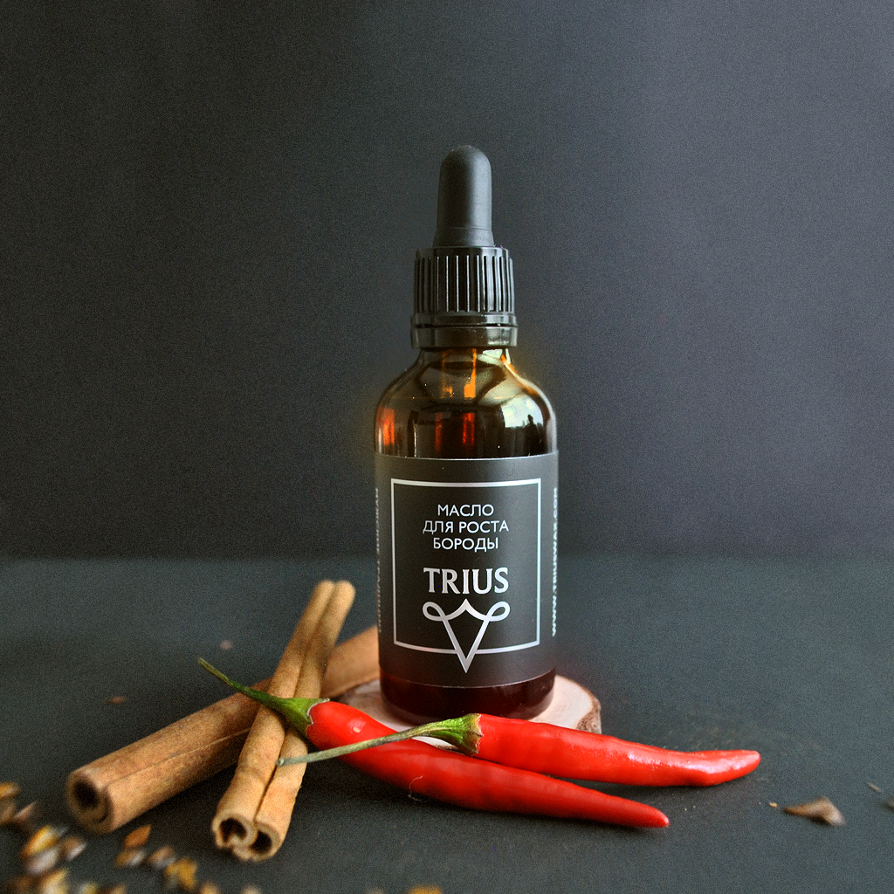
В состав входит масло красного перца чили, масло корицы и имбиря, которые стимулируют кровообращение и усиливают приток питательных веществ к корням волос. Кроме того в нем содержится уникальный комплекс из 18 компонентов, подобранных для стимуляции естественного роста бороды. Один флакон масла - это эффективный курс по запуску спящих волосяных луковиц, ускорению роста бороды, питанию и увлажнению волос.